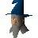

Magic Instructor

| Config name | newbie_magic_instructor |
| NPC id | 946 |
| Combat level | hidden |
| Options | Talk-to |
| Wander range | 2 tiles from spawn |
| Movement | indoors |
| Defined in | scripts/tutorial/configs/tutorial.npc |
Magic Instructor
A Master of Magics.
Show all 1 spawn on the world map → Open in knowledge graph →
Locations
| Area | Coordinates | Level | Count | Map |
|---|---|---|---|---|
| Bedabin Camp | 3141, 3088 | 0 | 1 | view |
Dialogue
PlayerHello.
Magic InstructorGood day newcomer. My name is Terrova. I'm here to tell you about magic. Let's start by opening your spell list.
Magic InstructorAll you have to do is open the magic interface by clicking on the flashing icon.
Magic InstructorGood. This is a list of your spells. Currently you can only cast one offensive spell called Wind Strike. Let's try it out on one of those chickens.
Magic InstructorSorry, I don't have any more runes just now. But I do see you have plenty.
Magic InstructorWell you're all finished here now. I'll give a reasonable number of runes when you leave.
Referenced in scripts
scripts/tutorial/scripts/guides/magic_instructor.rs2scripts/tutorial/scripts/tutorial.rs2